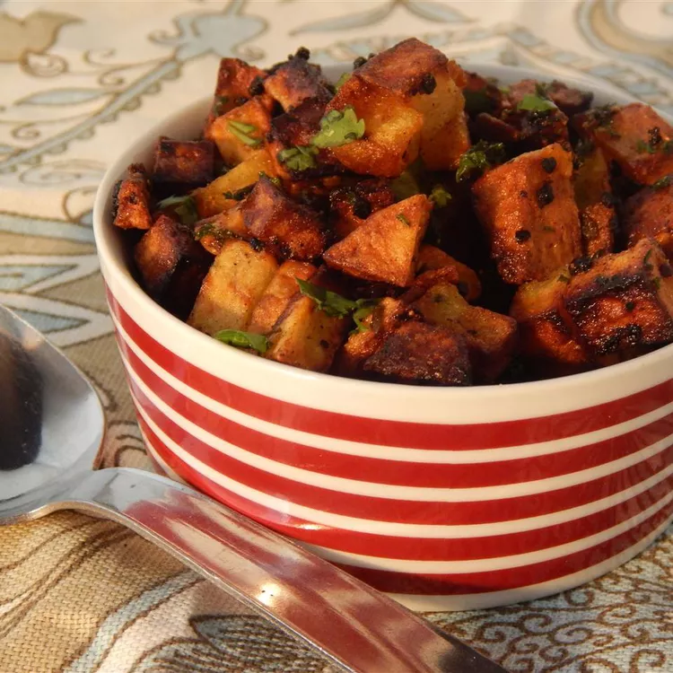

Indian Curry Potato Fries Recipe

Description
These Indian-inspired potatoes make for a wonderfully crispy appetizer or
side dish.
Tasty fried curried potato cubes make a wonderful accompaniment to many
Indian curry dishes. I don't know that this recipe is authentic in any
way, I came up with it making use of what I had around. It turned out
great and I got sent to the kitchen to make more. Serve with tamarind
chutney for dipping.
Ingredients
- 1 cup vegetable oil for frying, or as needed
- 2 cloves garlic, pressed
- 1 teaspoon cumin seeds
- ½ teaspoon salt
- ¼ teaspoon ground turmeric
- ¼ teaspoon ground black pepper
- 5 russet potatoes, peeled and cubed
- 2 tablespoons chopped fresh cilantro
- 1 teaspoon mild curry paste
Steps
-
Pour enough oil into a frying pan to cover the bottom 1/3-inch deep; add
garlic, cumin, salt, turmeric, and black pepper. Heat oil mixture over
medium heat.
-
Cook and stir potatoes in the hot oil, turning occasionally, until
cooked through, golden brown, and crisp on the outside, 10 to 15
minutes. Add fresh cilantro and curry paste and stir to coat. Fry until
cilantro is dark green and crisp, about 1 more minute. Remove potatoes
with a slotted spoon and transfer to serving dish.